How a weather radar sees rain, what goes wrong inside real radar files, and what each algorithm in our first three notebooks actually does. No radar background needed.
radar-wow is a set of repos that together turn a raw radar file into a rain map that works for any S, C or X band radar. The pipeline has these stages. This guide covers the highlighted ones, the parts that are built and tested.
Highlighted = built, tested, with notebooks. Dashed = partly built. The rest are planned.
Forgot what a term means? The coloured chips in the bar at the top stay with you as you scroll. Tap one for a short reminder. The same colours mean the same thing in every picture below. Tap any result figure to see it full size.
A weather radar sends out a short pulse of microwaves and listens for the echo. Raindrops, hail, snow, but also hills, buildings, birds and insects, reflect a little of the pulse back. The time the echo takes to return tells us how far away the reflector is. The strength of the echo tells us how much stuff is there.
The radar listens in time slots. Each slot corresponds to one little box of space along the beam, called a . A gate is typically 250 m long. One pointing direction of the antenna gives a ray of gates going outward. The antenna spins, so we get one ray per degree of azimuth, 360 rays per turn. One full turn at a fixed tilt is a sweep.
So a sweep is just a table: one row per ray (azimuth), one column per gate (range). Every number we work with lives in a cell of a table like this one, and there is one such table for each measurement.
A modern "dual-polarisation" radar sends two pulses at once: one whose electric field wiggles horizontally (H) and one that wiggles vertically (V). Why bother? Because raindrops are not round.
Small drops are round. As drops get bigger, air pushes their bottom flat, and they look like a hamburger bun: wider than they are tall. So a big drop reflects more of the H pulse than of the V pulse. Comparing H and V tells us about the shape of what is out there, not only how much of it there is.
From the H and V echoes the radar computes five numbers in every gate. Here they are, each with its colour.
The one-line version. = how much. = what shape. = total lag so far. = lag added per km here. = is it all the same kind of thing.
Here is what and look like along one ray that crosses two rain cells, a strong one at 35 km and a weaker, wider one at 80 km.
One more piece of vocabulary: . Radar quantities span huge ranges, so they are given on a log scale. +3 dB means twice the power, +10 dB means ten times, +20 dB a hundred times. A 55 dBZ hail core is 10,000 times "louder" than 15 dBZ drizzle.
Radars come in three main wavelengths. Everything in radar-wow has to work for all three, because each country picked differently. India's IMD runs S and C band radars, plus X band in the hills. The US NEXRAD network is S band, and Europe is mostly C band.
| band | wavelength | frequency | antenna, cost | KDP signal | loss in heavy rain | examples |
|---|---|---|---|---|---|---|
| S | ≈10 cm | 2 to 4 GHz | big, expensive | weakest | small | NEXRAD (2.8 GHz), IMD S-band DWRs |
| C | ≈5 cm | 4 to 8 GHz | medium | about 2× S | noticeable | Most of Europe, IMD C-band (e.g. Jaipur), ARM CSAPR2 |
| X | ≈3 cm | 8 to 12 GHz | small, cheap | about 3× S | severe | Short-range city and mountain gap fillers, ARM X-SAPR |
The trade-off: a shorter wavelength gives a stronger signal from a cheaper radar, but heavy rain eats more of the beam. At X band a squall line can dim everything behind it by tens of dB. That is why stage 4 (attenuation correction) matters most at C and X.
In the code, every number that depends on band lives in one small file per band, and each number cites where it came from. For example:
| setting | S | C | X | used by |
|---|---|---|---|---|
| KDP window length | 7 km | 7 km | 4 km | Vulpiani 2012 KDP |
| largest believable KDP | 10 °/km | 20 °/km | 35 °/km | all KDP methods |
| attenuation per degree ΦDP (α) | 0.015 | 0.08 | 0.28 | stage 4 |
| ρHV needed to count as rain | 0.90 | 0.90 | 0.90 | ΦDP processing |
To test on real radars without asking anyone for data, we use five free sample volumes: one S band, two C band, two X band.
| sample | band | radar | event |
|---|---|---|---|
| nexrad_ktlx_s | S | US NWS NEXRAD, Oklahoma City | 20 May 2013, Moore tornado supercell |
| arm_csapr2_c | C | US DOE ARM CSAPR2, Córdoba, Argentina | 11 Nov 2018, convection |
| imd_jaipur_c | C | IMD Jaipur, India | 22 Aug 2022, monsoon |
| arm_xprecip_x | X | ARM X-band, Gunnison, Colorado | 14 Mar 2022, mountain snow |
| arm_xsapr_x | X | ARM X-SAPR, Oklahoma | 20 May 2012, convective line |
The surprise: no two files have the same problems. Before any algorithm runs, our diagnose() function gives each file a check-up. It measures each problem and names the stage that fixes it. Here is what it found, in plain words.
| problem | what it means | where we found it | who fixes it |
|---|---|---|---|
| "Nothing here" stored as a number | Empty gates are written as −33 dBZ instead of "missing". An algorithm would treat 1.1 million empty gates as very light rain. | NEXRAD | core, on reading |
| Noise stored | The receiver's own hiss is saved in every gate. Its level rises with distance, so far away it looks like weak rain. | all three ARM files (only 25 to 78% of gates are real signal) | QC: signal mask |
| A biased quality field | The CSAPR2 file says 98% of gates have good signal-to-noise. Its other quality field says 45%. They can't both be right. | CSAPR2 | QC: use both |
| ΦDP offset | ΦDP starts at 36°, 102°, 119° or 197° instead of 0, depending on the radar's hardware. | all with ΦDP | stage 3 prep |
| ΦDP wrapping ("folding") | Like a clock hand passing 12, ΦDP jumps from 360° back to 0°. 36 to 45 rays per sweep did this. | NEXRAD, CSAPR2, X-SAPR | stage 3 prep |
| ΦDP runs backwards | CSAPR2 stores ΦDP going down through rain on 92% of rays (the file holds 360° minus the usual value). | CSAPR2 | stage 3 prep (detected automatically) |
| Mislabelled field | The field called diff_phase is actually KDP, not ΦDP. We now trust the field's description over its name. | X-SAPR | core, on reading |
| Clipped ZDR | ZDR never goes below 0, which is physically wrong. Probably stored without a sign. | X-SAPR | flagged, not usable for checks |
| ρHV above 1 | Impossible in theory; 15% of signal gates. A noise-correction issue. | NEXRAD | flagged |
| Missing moments | No ΦDP and no ρHV exported, so dual-pol QC, KDP and attenuation correction cannot run at all. | IMD Jaipur | blocker ask for the raw files |
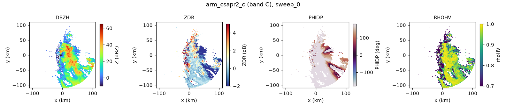
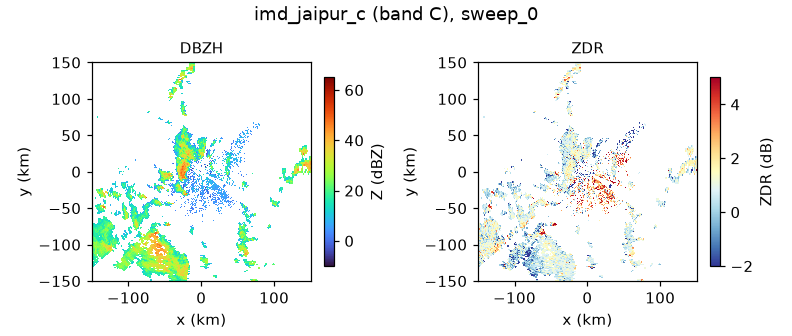
Why this matters for a "generalised" system. If we had written the algorithms for one radar, they would silently produce nonsense on two of the other three. So every radar-wow pipeline starts the same way: open_volume (read any format, rename to standard names, remove code values), then diagnose (measure what is wrong), then the algorithms. Each algorithm also declares which bands and which measurements it needs, and refuses to run otherwise.
A radar echoes off everything. Before we can estimate rain, we have to throw away gates that are not weather. Each kind of junk has its own fingerprint, and each algorithm looks for one fingerprint.
| junk | looks like | fingerprint we use | algorithm |
|---|---|---|---|
| Receiver noise | Faint speckle everywhere, stronger far out | Signal-to-noise below 3 dB, or below the measured noise floor | SignalMask |
| Ground clutter | Hills, towers, buildings near the radar; strong and fixed | Z jumps wildly from gate to gate; ZDR, ΦDP noisy | Hubbert2009CMD |
| Anything not meteorological | Clutter, birds, insects, chaff | Low ρHV, rough ΦDP, odd ZDR, combined into a quality score | Vulpiani2012QualityMap |
| Interference (Wi-Fi/RLAN, sun) | A thin straight spoke to the edge of the map | One ray filled almost to the end, low ρHV | InterferenceSpikes |
| Speckle | Tiny isolated islands of a few gates | Connected patch smaller than 10 gates | Despeckle |
| Birds and insects | Broad low echo around the radar at night, during migration | Learned by a neural network from all moments | MistNet |
About the names: each algorithm is named after the first author and year of the paper it implements, plus what it does. Hubbert2009CMD is the Clutter Mitigation Decision of Hubbert, Dixon and Ellis (2009). One class = one paper.
The receiver always hears some hiss. Converted to dBZ, that hiss looks stronger the further away you go, because the radar boosts distant echoes to make up for the beam spreading out (the boost grows as 20·log of range). So noise far away can look like light rain.
Rain varies gently from one gate to the next. A building next to empty air goes from very loud to quiet in one gate. So we measure how jagged is along each ray.
Instead of hunting one kind of junk, ask several questions about whether each gate looks like rain, and combine the answers.
Wi-Fi-like transmitters (RLAN) and the rising or setting sun send energy straight into the antenna when it points at them. The result is one ray "lit" all the way to the edge, with power rising with range and low . We flag rays where more than 90% of gates beyond 30 km have signal (signature after Saltikoff et al. 2016). Despeckle then removes isolated patches smaller than 10 gates.
Real data has no answer key, so we first build a fake sweep where we know exactly which gates are clutter: a rain cell, a clutter patch near the radar, and one interference spoke.
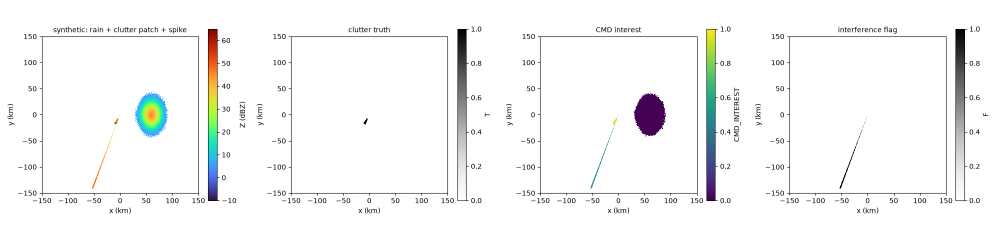
| algorithm | clutter found (POD) | rain wrongly removed |
|---|---|---|
| Hubbert 2009 CMD | 93% | 0.0% |
| Vulpiani 2012 quality map | 100% | 6.0% |
| Interference spikes | found ray 200; truth was ray 200 | |
POD = probability of detection: the share of true clutter gates that got flagged. Results are identical for S, C and X here because the fake data does not change with band.
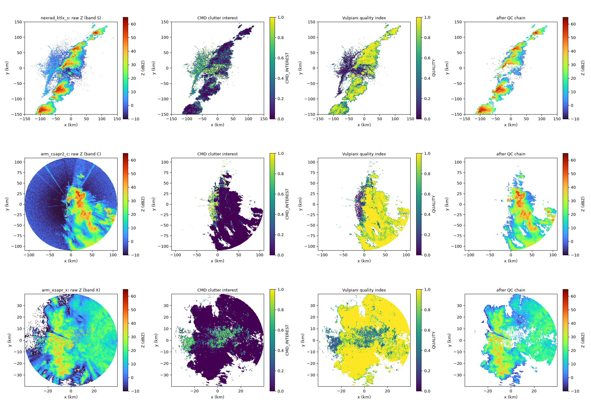
| radar | real signal | clutter (CMD) | low quality | speckle | kept |
|---|---|---|---|---|---|
| NEXRAD (S) | 100%* | 22% | 43% | 3% | 50% |
| CSAPR2 (C) | 45% | 14% | 23% | 1% | 76% |
| X-SAPR (X) | 83% | 16% | 16% | 1% | 77% |
Percentages are of real-signal gates. *NEXRAD already removes noise inside the radar, so everything left in the file is signal.
Open issue. On NEXRAD the quality map throws out 43% of the signal. Most of it is the low, ragged echo around the radar (birds and insects on a May afternoon), which is right to remove. But it also nibbles the edges of the rain cell in the far south-west, where ρHV is a bit low. Its ρHV threshold needs tuning per band before we trust it.
Recall: is half the slope of along the ray. Taking a slope sounds easy. The trouble is that measured ΦDP jitters by a few degrees from gate to gate, and gates are only 0.25 km apart. A 3° jitter over 0.25 km looks like a slope of 12°/km, bigger than the heaviest rain. Slopes of noisy data are mostly noise. Every KDP method is a different answer to: how do we smooth without wiping out the real rain cells?
Before any slope, the raw values have to be made sensible. Here is a made-up ray that has all the problems we found in Section 4 at once.
Why "runs of at least 2 km"? Far from the storm, a few noise gates pass the ρHV test by pure chance. If we keep them, step 6 draws a line from the storm out to a random noise value and invents a big ΦDP rise. Requiring unbroken runs fixed this on two of our three radars. A second rule, a signal-to-noise ratio of at least 10 dB, fixed the third: in weak echo behind a storm, NEXRAD's ρHV is unreliable (15% of its signal gates show impossible values above 1), so noise gates were passing the rain test. The prep code (radarwow.kdp.phase.prepare) runs these steps on every ray. The sign check looks at the whole sweep: if ΦDP goes down through rain on more than 70% of rays, the radar uses the opposite convention, and we flip it.
The simplest fix for noise is to take the slope over a longer stretch: compare ΦDP a few km ahead with a few km behind. Play with the window below. The black line is the true KDP; pink is what we estimate from noisy ΦDP.
Physics says that in rain ΦDP can only grow along the ray (KDP ≥ 0). So find the curve that stays as close as possible to the measurements under the rule that it never decreases. Finding the best curve that obeys rules is a textbook problem called linear programming (LP), solved by an optimiser.
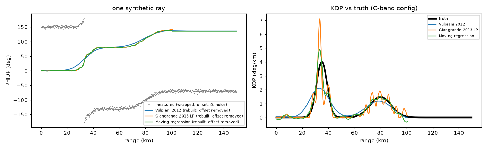
| method (C band settings) | error (RMSE, °/km) | most negative KDP |
|---|---|---|
| Vulpiani 2012 | 0.54 | −0.14 |
| Giangrande 2013 LP | 0.56 | 0.00 |
| Moving regression | 0.34 | −1.43 |
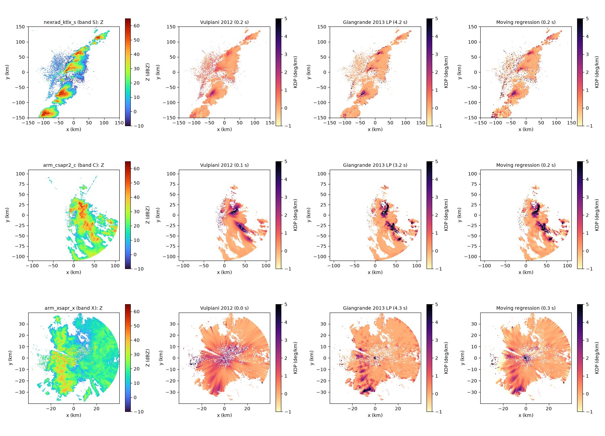
For real data nobody knows the true KDP. Other software's output is not truth either, because it made its own choices. But there is a check every method must pass, like an odometer and a speedometer: adding up the speed over the trip must give the distance travelled. Here, 2 × (sum of KDP along a ray) must equal how much ΦDP rose along that ray. We call this phase closure.
| band | method | median closure error | run time |
|---|---|---|---|
| S (NEXRAD) | Vulpiani | 9.4° | 0.1 s |
| LP | 3.4° | 1.5 s | |
| regression | 8.3° | 0.1 s | |
| C (CSAPR2) | Vulpiani | 16.3° | 0.0 s |
| LP | 8.7° | 1.5 s | |
| regression | 16.6° | 0.1 s | |
| X (X-SAPR) | Vulpiani | 6.0° | 0.0 s |
| LP | 3.1° | 1.1 s | |
| regression | 4.7° | 0.1 s |
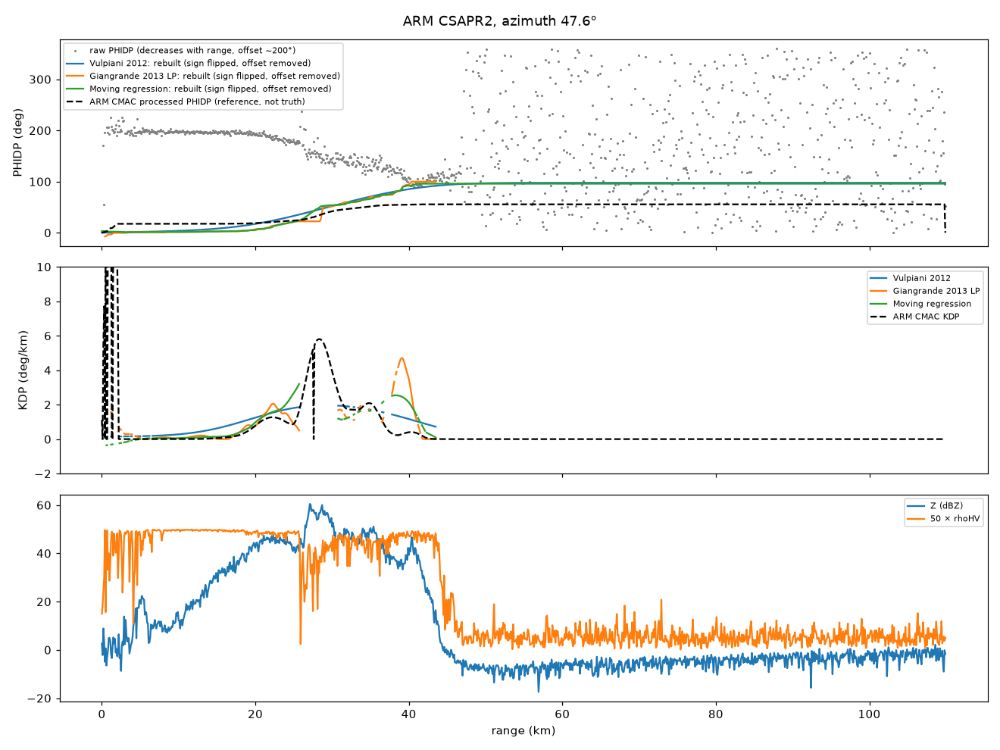
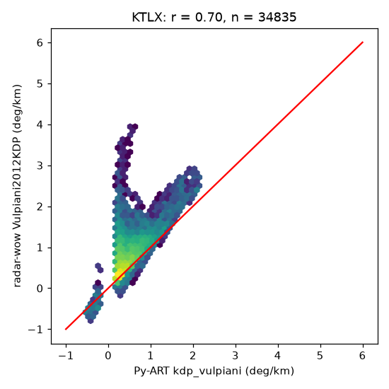
Py-ART, the most used open-source radar library, has its own version of Vulpiani 2012. On the same NEXRAD sweep the two agree well (correlation r = 0.86, up from 0.70 before our two rain-gate rules). Most points sit near the red 1:1 line.
The branch where ours read too high came from the noise gates described above, and it shrank once they were excluded. What is left is scatter from gates the two codes mask and gap-fill differently.
What we learned in stage 3. Clean up ΦDP first, or no method works on two of our three radars. LP is the most accurate on real data (closure error 3 to 9°) but slowest; Vulpiani is the fast default; regression is good in light rain but goes negative behind hail. Check with phase closure, not by matching someone else's product.
Heavy rain does not just reflect the beam. It also absorbs part of it, on the way out and on the way back. Everything behind a storm therefore looks weaker ( too low) and rounder ( too low) than it really is. At S band the loss is small, at C band it is several dB, and at X band it can be tens of dB.
The total loss along the path up to a gate is called PIA, the two-way path-integrated attenuation, in dB. The fix is simple once PIA is known: add it back. Corrected Z = measured Z + PIA. Corrected ZDR = measured ZDR + (β/α) × PIA.
The trick: ΦDP already knows. The same flat drops that slow the H wave (raising ) also absorb it. So the loss is close to proportional to the lag: A = α × KDP, and PIA ≈ α × ΦDP. And ΦDP itself is not weakened by attenuation, because it is a timing measurement, not a loudness measurement. The number α depends on the band: 0.015 (S), 0.08 (C), 0.28 (X) dB per degree.
ΦDP is reliable for the total rise across the storm, but noisy gate by gate. Z is smooth gate by gate but is the thing being damaged. ZPHI combines them: it uses ΦDP only for the total loss across the rain (α × ΔΦDP), and shares that total out along the ray in proportion to how strong the rain is according to Z.
Run ZPHI with many trial α values. Each one predicts a ΦDP curve along the ray (PIA ÷ α). Keep the α whose predicted curve best matches the measured ΦDP.
One thing we learned the hard way: α can only be fitted where the path attenuates noticeably. With little loss, every α predicts nearly the same curve, and the "best" one is just noise, often stuck at the edge of the allowed range. So a ray gets its own α only if (a) the expected loss is at least 3 dB, (b) the best α is inside the range, and (c) it beats the default by 10%. Other rays keep the band default and are flagged.
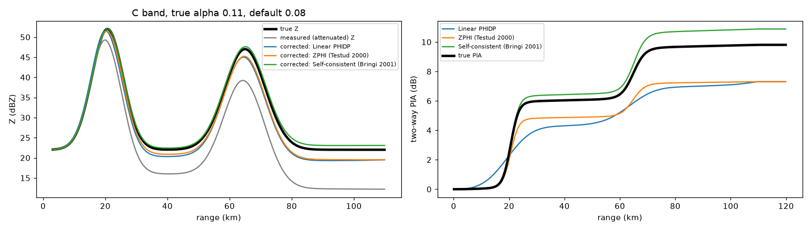
| case | loss at far end | linear | ZPHI | self-consistent |
|---|---|---|---|---|
| S, α right | 1.6 dB | 0.02 | 0.02 | 0.02 |
| C, α right | 9.3 dB | 0.09 | 0.09 | 0.11 |
| C, α wrong (0.11 vs 0.08) | 9.3 dB | 2.56 | 2.53 | 0.48 |
| X, α right | 25.9 dB | 0.37 | 0.38 | 0.50 |
Numbers are the remaining Z error in dB at the far end of each ray.
Signal extinction. In the X band case the rain at the very end of some rays (about 7 km of it) became weaker than the receiver's own noise. Those gates are simply gone; no correction can bring back a signal that never arrived. They are left untouched and must be flagged. This is why X band radars are used at short range or in dense networks.
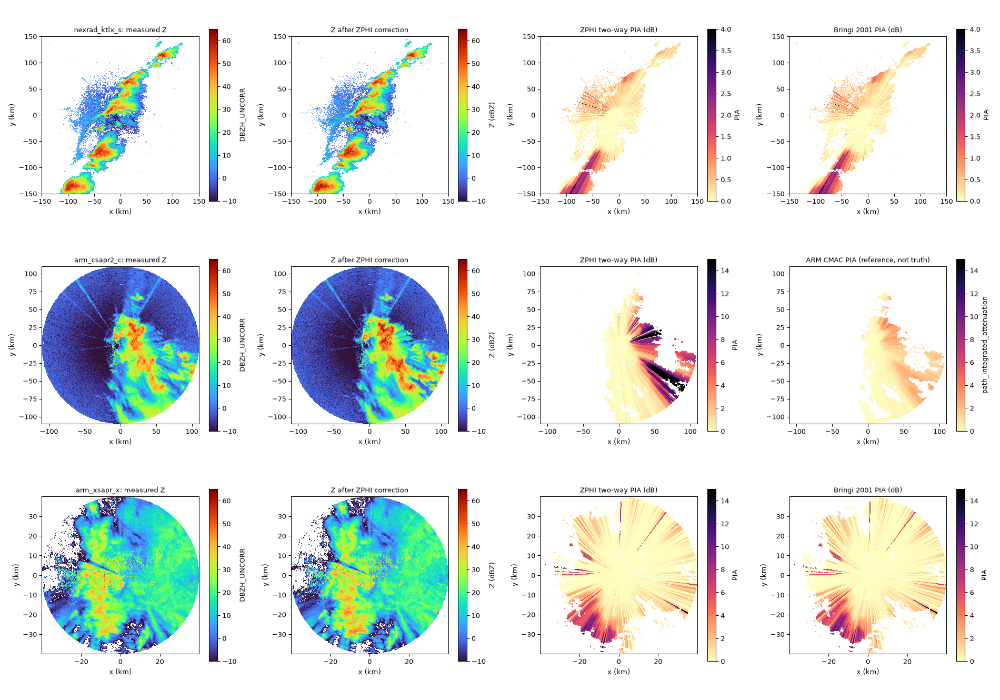
Light rain has small, almost round drops, so its should be about the same whether or not a storm stands between it and the radar. Behind a storm, attenuation drags it down. If the correction works, it should come back up.
| C band (CSAPR2) | ZDR of light rain |
|---|---|
| with no storm in front (reference) | +0.15 dB |
| behind the storm, before correction | −1.49 dB |
| behind the storm, after linear correction | −0.18 dB |
| behind the storm, after ZPHI | −0.14 dB |
| behind the storm, after self-consistent | −0.15 dB |
All three corrections close about 1.35 dB of the 1.65 dB gap, and they barely differ. The rest suggests β (the ZDR loss per degree) is a little higher at this radar than our band default, which is exactly what the not-yet-implemented ZDR constraint from Bringi 2001 would estimate.
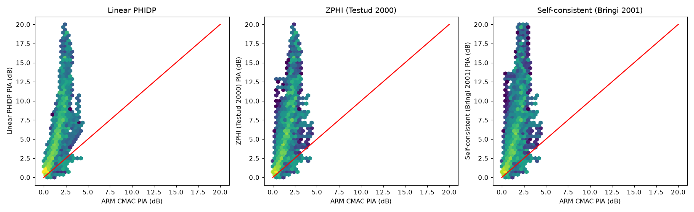
Everything so far cleans the measurements. Now we turn them into what people need: how much rain is falling, in millimetres per hour. There is no direct way to measure that from a radar. Instead, each measurement is linked to rain rate through a power law learned from drop-size measurements on the ground: R = c × (measurement)d. We have three measurements that can do it, and each has a different weakness.
| estimator | uses | strength | weakness |
|---|---|---|---|
| R(Z) | Works on every radar, including reflectivity-only data (IMD today). Fine in light rain. | Depends on calibration (1 dB error ≈ 15% rain error), dimmed by attenuation and blockage, and the "right" c and d change with the type of rain. | |
| R(KDP) | No calibration needed; good in heavy rain and in rain mixed with hail. | Too noisy in light rain. | |
| R(A) | A, specific attenuation (from stage 4) | No calibration needed, almost linear in rain rate, less sensitive to drop sizes than Z or KDP. | Needs pure rain and a large enough ΦDP rise along the ray. |
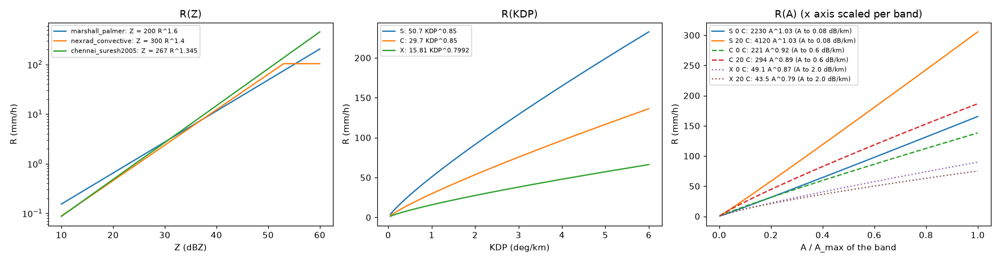
The US MRMS system (Zhang et al. 2020) does not trust one estimator everywhere. It chooses per gate, and we follow its logic:
Each gate also records which ruler it used, so every number in the final map can be traced.
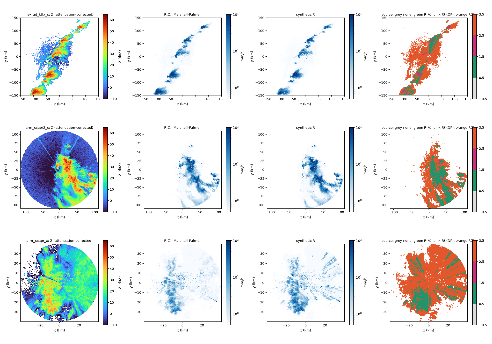
On real data, R(A) first produced absurd rates: up to 1,800 mm/h at S band. Tracking them down gave two rules, now settings in each band's configuration file:
If a ray's ΦDP barely rises, the attenuation along it is too small to measure, and R(A) is mostly noise. At S band, where attenuation per degree is 5× smaller than at C, R(A) only behaves when the rise is at least about 40°. At C and X, 5° is enough.
At X band, deep behind a storm (more than about 10 dB lost), ZPHI amplifies noise and A jumps to impossible values. Beyond that, R(Z) or nothing is used.
Two more fixes came from the same hunt: ZPHI must see the hail gates' reflectivity (capped) when sharing out the ΦDP total, and ΦDP processing must ignore weak, noisy gates (Section 6). After all four, the largest rates are 125 mm/h at C, 245 at X and 559 at S, where 16 gates inside the tornadic supercell remain suspicious.
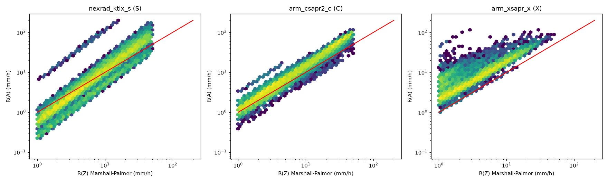
| band | median R(A) ÷ R(Z) | what it suggests |
|---|---|---|
| S (NEXRAD) | 0.92 | agree |
| C (CSAPR2) | 1.35 | agree within the usual Z–R uncertainty |
| X (X-SAPR) | 2.04 | R(A) gives twice the rain |
A calibration clue at X band. R(A) does not depend on how well the radar's Z is calibrated; R(Z) does. When they disagree by a factor of two everywhere, the likely cause is that this X-SAPR's Z reads several dB low, or that Marshall–Palmer is wrong for this storm. That is exactly the kind of question the calibration stage (stage 1) answers. It also explains the spokes in the X band map: whole rays switch between two rulers that disagree. MRMS hides such edges with a blending zone. The better fix is upstream: use R(A) to measure the Z calibration error (Diederich et al. 2015), then correct Z.
R(KDP) compared with R(Z) looks 2 to 3× higher at every band. That is a statistical trap, not a finding: comparing only gates where R(KDP) > 1 mm/h selects gates where KDP noise happened to be positive. It is why R(KDP) is only used in heavy rain.
No rain gauges yet: everything here is a consistency check, not a verification. The next step is to add up hourly rain on a NEXRAD case and compare with an independent gauge-corrected product.
So far every test used one snapshot. Real rain maps add up rain over time, and the only fair test is against something measured on the ground. This chapter runs the whole chain on four hours of real data and compares the hourly totals with an independent reference.
| piece | what we used |
|---|---|
| radar | NEXRAD KTLX (Oklahoma City, S band), 44 volumes, 06–11 UTC on 5 May 2022, a night of widespread rain |
| chain | read → melting layer → KDP → attenuation → synthetic rain rate → hourly totals |
| reference | MRMS "MultiSensor QPE Pass 2": the US national radar product adjusted with rain gauges. Independent of our processing, but not perfect truth. |
| peer | MRMS radar-only: the same national system without gauges |
All of it is free on Amazon Web Services: the radar files, MRMS and the HRRR weather model used below. Nothing here needed an account.
Real radars go down. The heaviest rain that night fell between 02 and 05 UTC, and KTLX has no data for exactly those hours. That is one reason national systems combine many radars into a mosaic (stage 8). We used the four hours with full coverage.
Rain relations only work on rain. Above a certain height, the drops are snowflakes, and in a thin layer in between they are melting. Melting snowflakes look like giant raindrops to the radar: their Z jumps up (the "bright band"), ρHV drops and ZDR rises. That signature lets us find the layer.
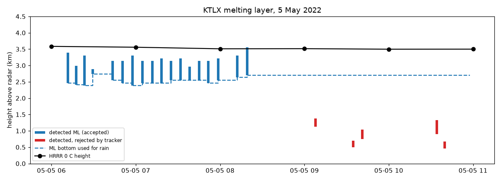
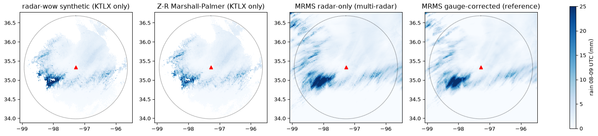
| hour (UTC) | radar-wow synthetic: total ÷ reference | correlation | MRMS radar-only: total ÷ reference | correlation |
|---|---|---|---|---|
| 07–08 | 1.18 | 0.94 | 1.10 | 0.98 |
| 08–09 | 1.06 | 0.93 | 1.14 | 0.99 |
| 09–10 | 1.18 | 0.92 | 1.26 | 0.98 |
| 10–11 | 1.08 | 0.77 | 1.22 | 0.97 |
Cells within 150 km of the radar, about 40,000 to 50,000 per hour. A ratio of 1.00 means the same total rain as the gauge-corrected reference.
Read it this way. In total amount, our single-radar estimate is as close to the gauge-corrected reference as the US national system's own radar-only product, and closer in three of four hours. In pattern (correlation), MRMS is clearly better. Part of that is unfair, because the reference is MRMS radar-only adjusted with gauges, so the two are bound to look alike. Part is real: MRMS uses several radars and corrects for storm motion.
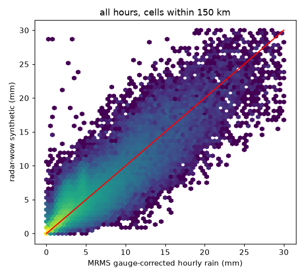
| distance from radar | total ÷ reference, by hour |
|---|---|
| 0–50 km | 0.96 to 1.29 |
| 50–100 km | 1.02 to 1.11 |
| 100–150 km | 1.17 to 1.53 |
The radar beam widens as it travels: at 150 km it is about 2.6 km tall. Its upper part reaches the melting layer, where the bright band inflates Z, so we overestimate. The fix is the vertical profile of reflectivity (VPR) correction (Zhang & Qi 2010): learn how Z changes with height from the radar's own data and bring far-range values down to what they would be near the ground. Chapter 10 does exactly that.
Chapter 9 ended with a problem: 100 to 150 km from the radar we overestimate rain by 17 to 53 %. The beam is about 1° wide, so far from the radar it is kilometres tall, and its upper part cuts through the melting layer. Melting snowflakes look like huge raindrops, so Z there is several dB too high: the bright band. Rain relations then turn that extra Z into rain that never reached the ground.
Zhang & Qi (2010), the method behind the US national system's (NMQ, now MRMS) brightband correction. One addition is ours: the peak may only be searched within 1.5 km below to 0.5 km above the 0 °C height. Without it, on this case the "peak" wandered up to 4.3 km, above the freezing level, where no melting can happen.
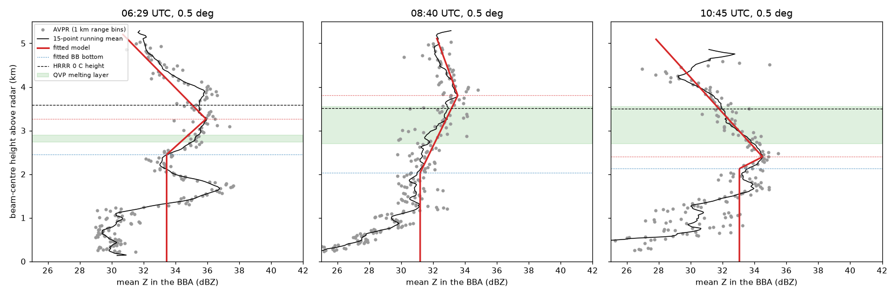
| hour (UTC) | 100–150 km, before | after VPR | all 0–150 km, before | after VPR |
|---|---|---|---|---|
| 07–08 | 1.22 | 1.17 | 1.18 | 1.14 |
| 08–09 | 1.17 | 1.15 | 1.06 | 1.05 |
| 09–10 | 1.53 | 1.32 | 1.18 | 1.11 |
| 10–11 | 1.22 | 1.06 | 1.08 | 1.02 |
Hourly total ÷ MRMS gauge-corrected total for the synthetic estimate; 1.00 is a perfect total. Correlation stayed the same or improved (at 100–150 km in the last hour, 0.63 → 0.69).
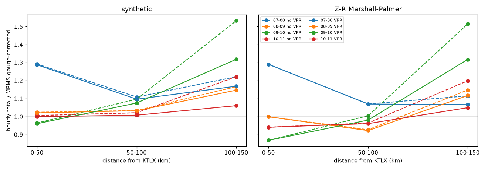
It helps, but it is not finished. In the worst hour, two-fifths of the far-range excess is left. Two reasons:
1. The paper only corrects columns with at least 30 dBZ, so lighter rain seen through the bright band stays too high.
2. The fits are noisy on a weak, patchy bright band. Below, the fitted peak jumps between 2 and 4 km and some fitted bottoms fall to 1 km, well below the melting layer the radar itself detects. 11 of 44 volumes got no correction.
The obvious fix is to anchor the fit to the radar's own melting layer. We have not tuned anything yet, because this case is also the one we score against; tuning here would flatter the result. New cases come first.
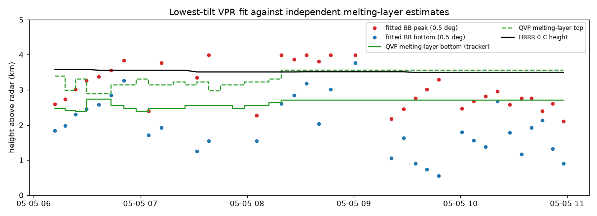
A radar takes a snapshot of the rain about every 6 minutes. To get an hourly total, the simplest way is to assume each snapshot's rain stays put until the next one. But storms move. That night they moved at about 60 km/h, so a rain cell travelled 6.6 km between two snapshots. Holding each snapshot paints the cell once every 6.6 km and leaves dry gaps in between: stripes.
Anagnostou & Krajewski (1999), as used in the pysteps example on advection correction. The motion is measured from each pair of scans on its own.
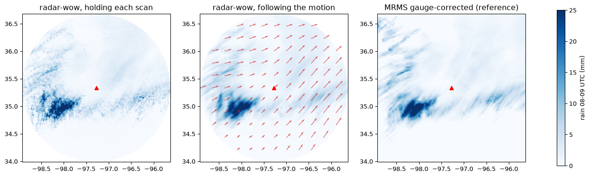
| hour (UTC) | correlation, holding | correlation, following | error (RMSE) change | total ÷ reference, following |
|---|---|---|---|---|
| 07–08 | 0.89 | 0.93 | −25 % | 1.04 |
| 08–09 | 0.90 | 0.94 | −22 % | 1.05 |
| 09–10 | 0.89 | 0.95 | −31 % | 1.12 |
| 10–11 | 0.74 | 0.88 | −36 % | 0.99 |
Synthetic estimate with the VPR correction, every 1 km cell within 150 km of the radar, against MRMS gauge-corrected rain. A cell with no radar echo counts as no rain. Chapters 9 and 10 instead skipped cells with echo in fewer than 48 minutes of the hour, so their numbers differ a little from these.
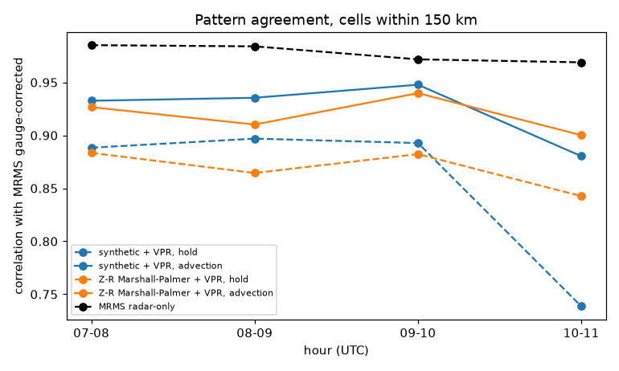
The amounts barely change; the placement does. Moving rain around does not add or remove any, so the totals stay within a few per cent of before. What improves is where the rain lands.
MRMS radar-only still matches the pattern better (0.97–0.99), because it combines several radars and uses the lowest beam over each place. That is the job of the mosaic stage.
The lowest tilt is the most valuable one: it sees closest to the ground, where the rain lands. It is also the one hills and mountains get in the way of. When a ridge cuts off part of the beam, the radar receives less power from the rain behind it, and every gate further along the ray reads too low.
The blocked fraction agrees exactly with the open-source wradlib implementation. It assumes normal bending of the beam by the atmosphere and a perfectly pointed antenna: Bech et al. found that a 0.1° pointing error changes blockage by about 10 %.
Oklahoma is flat, so this needs a different radar. KDAX near Sacramento sits on the valley floor, with the Coast Ranges to the west and the Sierra Nevada foothills to the east. The case is the atmospheric river of 24 October 2021, four hours of steady rain (12–16 UTC).
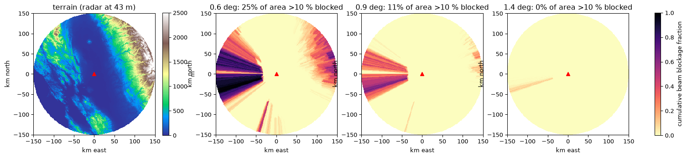
| method | partly blocked (10–50 %) | mostly blocked (>50 %) |
|---|---|---|
| lowest tilt, as it is | 0.71 | 0.53 |
| hybrid scan only | 0.71 | 0.61 |
| hybrid scan + dB correction | 0.85 | 0.74 |
| MRMS radar-only | 0.72 | 0.63 |
Rain in blocked areas as a share of what the same method gets over open terrain in the same hour (1.00 = blockage fully compensated), mean of the four hours, on cells every method covers.
Blockage costs what you would expect: 29 % of the rain in partly blocked areas, 47 % in mostly blocked ones. The two fixes work best together. The hybrid scan alone does nothing for partly blocked areas, because it keeps the lowest tilt while that is under half blocked. The dB correction alone gives up above 60 % and leaves most of the mountains empty. Together they close about half the gap, more than MRMS radar-only does on the same cells.
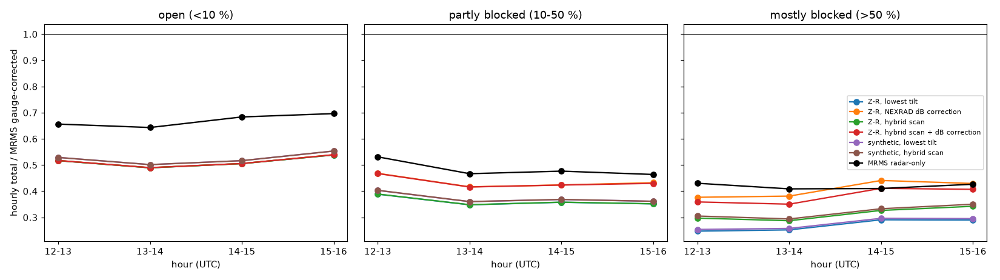
This case has a bigger problem than blockage. Even over the open valley, every method gets only about half of the reference rain, and MRMS radar-only about two-thirds. Atmospheric-river rain is mostly many small drops, and the Marshall–Palmer relation turns their reflectivity into too little rain. The blended estimator does not help, because its attenuation-based part needs more phase shift than this moderate rain produces. That is the next thing to fix.
Part of the remaining blockage gap may not be blockage either: the blocked areas are the mountains, where rain grows below the beam as air rises over the terrain.
Our five sample files showed problems that come from the radar and its software. A second family comes from the place: terrain, climate, season, what is built nearby. A system that works everywhere has to handle both. Here is the map of place-dependent problems, and which stage owns each one.
Beam blocked partly or fully; strong clutter; the lowest tilt overshoots valleys.
stage 6 blockage, hybrid scan QC clutter
Sea clutter; "anomalous propagation" when warm air over cool sea bends the beam down onto the water.
QC, partly
Buildings and towers (clutter), Wi-Fi/5 GHz RLAN interference (C band), wind farms.
QC interference, clutter
Very heavy rain: strong attenuation at C and X; high melting layer; large drops.
stage 4 attenuation stage 6 estimators
Low melting layer: the bright band inflates Z; the beam sees snow above the ground rain.
stage 5 melting layer stage 6 VPR, partly
Dust storms (common pre-monsoon over north India, including Delhi) and smoke give low-ρHV echo that is not rain.
QC quality map stage 5 classes
Night-time migration seasons and summer insects give broad echo around the radar.
QC MistNet (stub)
Hail inflates Z and corrupts ΦDP (the δ bump).
stage 5 classification stage 3 partly
The beam widens and rises above the rain; gauges and radar disagree more.
stage 6 VPR, partly stage 7 merging, stage 8 mosaic
The sun appears as a spike. Annoying, but also useful: its known position checks antenna pointing and receiver calibration.
QC spikes stage 1 calibration
Green = handled now. Amber = partly handled. Grey = planned in a later stage.
| stage | status | open items |
|---|---|---|
| core: read, rename, check | built | More formats as we meet them (IMD raw IRIS). |
| 2 quality control | built | Tune the quality-map ρHV threshold per band; wire in MistNet for birds. |
| 3 ΦDP → KDP | built | The last Py-ART difference; handle the hail bump δ explicitly. |
| 4 attenuation | built | ZDR constraint for β; hail, melting-layer and wet-radome loss. |
| 5 melting layer | built | Remove non-weather echo before the profiles; hydrometeor classification still to do. |
| 6 rain rate + totals | built | VPR built (far-range bias 1.17–1.53 → 1.06–1.32), fit to be anchored to the melting layer. Motion-corrected totals built (correlation 0.74–0.90 → 0.88–0.95). Blockage and hybrid scan built (closes about half the blockage loss). Next: rain relations for small-drop rain. |
| verify | built | First case done (KTLX vs MRMS). More cases, seasons and radars; rain gauges directly. |
| 1, 7 to 10 | planned | Survey done (four parts, build plan); code not started. |
The state-of-the-art survey (four parts, about 400 verified references) is done and turned into a build plan. The first end-to-end rain map is now checked against gauge-corrected data. The brightband (VPR) correction now cuts the far-range overestimate in every hour. Hourly totals now follow storm motion, which removes the stripes and lifts the correlation with the reference to 0.88–0.95. Beam blockage from terrain is in, with the hybrid scan. A mountain case showed the next problem: rain relations that underestimate small-drop rain by about half.